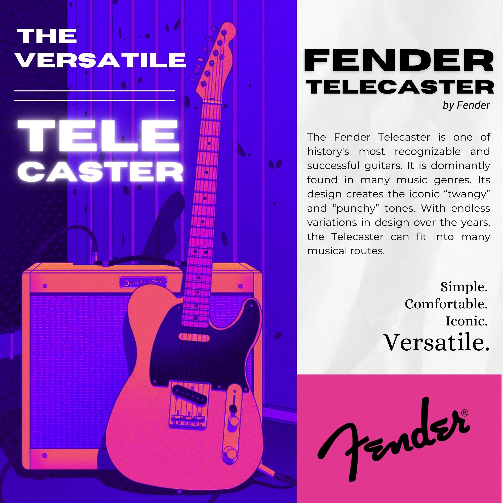

Welcome.
Hi, I'm Skyle Edson Abayon. I'm a budding Web Designer, Graphic Designer, and Part-Time Musician.
MoreAbout Me
I am enrolled in Cebu Technological University - Consolacion Campus. Currently a 2nd Year student in the BS Information Technology program. I'm a graduate of Mandaue City Comprehensive National High School (2022-2023). What inspired me to kickstart my passion in graphic design is the vast amount of opportunities I can explore with these in the future. Graphic Design is in high demand because of the shift of media to digital means. I am currently managing the Digital Visuals for our Band Page. I also just love seeing good designs everywhere. I mainly use Canva and Medibang Paint Pro for my works, and I am still currently growing my experience in Adobe Photoshop. I took an interest in Web Design. I am still expanding my skills and knowledge in Web Development, Software Development, etc. Music is another thing I really love. I may have never experienced a day without listening to music. I earn from playing in gigs every weekend.
Projects & Services
Graphic Design
I create visuals for posters, pubmats, flyers, social media visuals, etc. I am a graphic designer in "Ang Sarok"—a journalism club in Cebu Technological University - Consolacion Campus. You can check my Graphic Design work here; click the button below.
View ProjectWeb Development
I newly started and I am currently learning Web Development. This portfolio webpage is my first published project in GitHub.
View Project